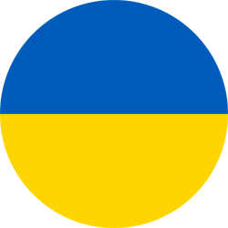

Сайт про Україну

Новини про Україну

Україна з 2023 року хоче покращити контроль за відхиленям від податків
Україна офіційно заявила про бажання впровадити міжнародний стандарт автоматичного обміну інформацією про фінансові рахунках в податкових цілях (CRS Стандарт) в 2023 році, це допоможе виявляти випадки ухилення від податків.
6 вересня 2021

В Київ прибула делегація конгресу США
До Києва прибула делегація Конгресу Сполучених Штатів Америки, плануються зустрічі з президентом і урядом.
5 вересня 2021
Розташування України
Таблиця державних свят України
| Держ. свято | дата |
|---|---|
| День Соборності України | 22 січня |
| День державного Герба України | 25 лютого |
| День державного Гімну України | 10 березня |